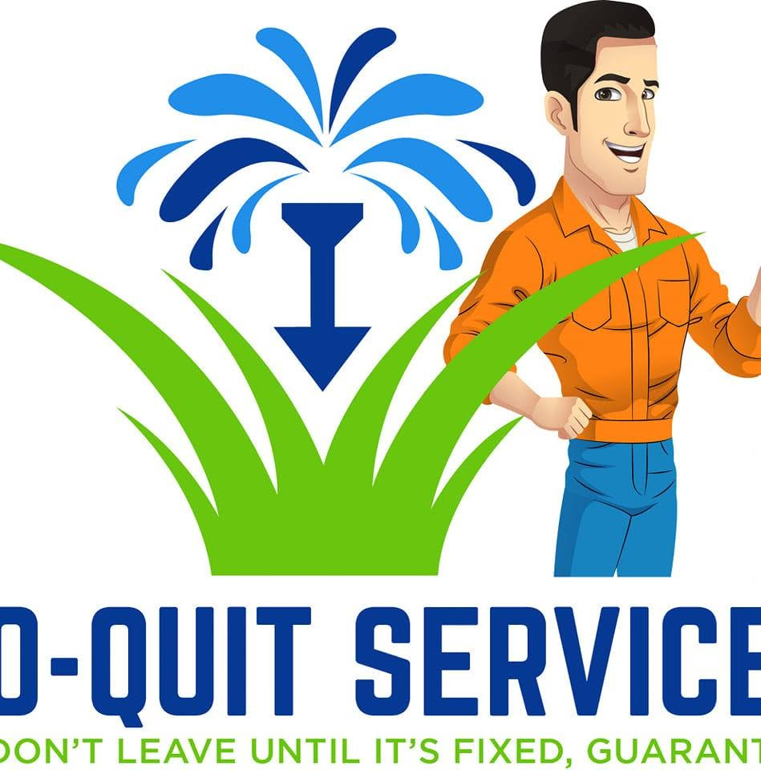
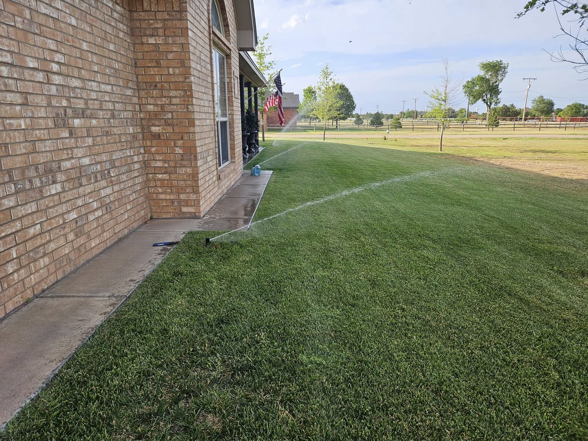
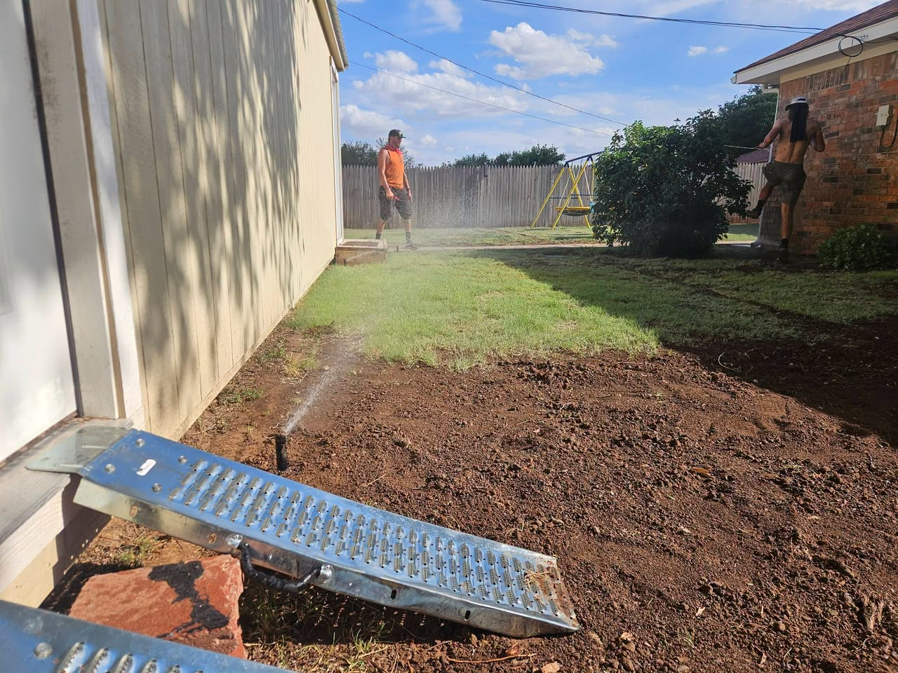
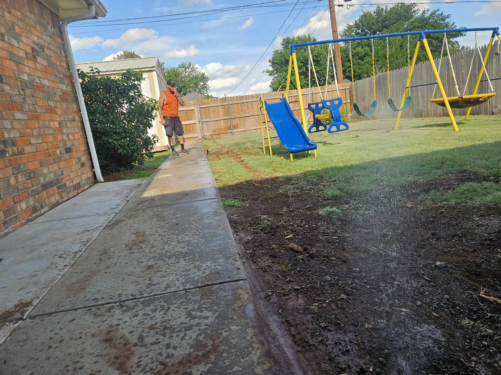
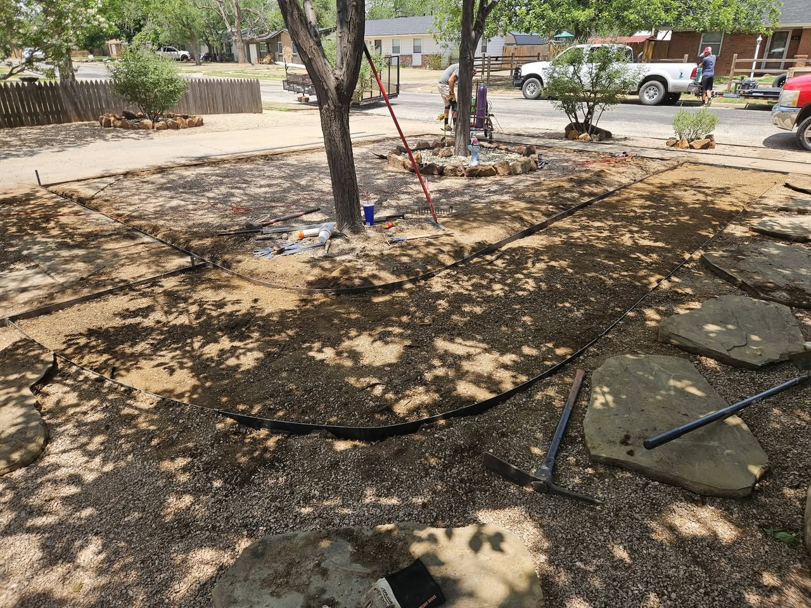
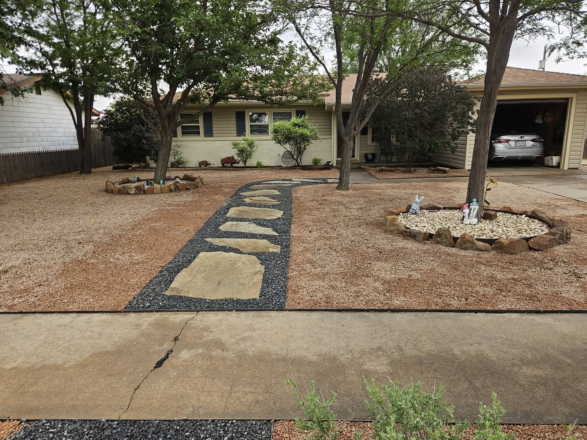
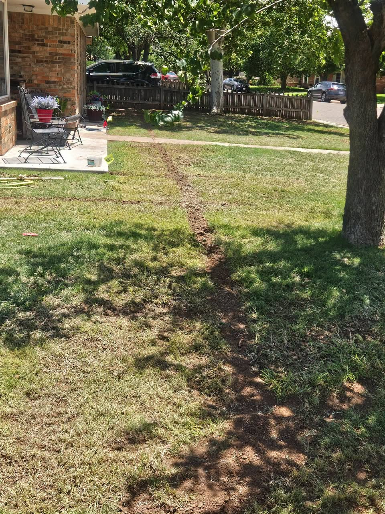
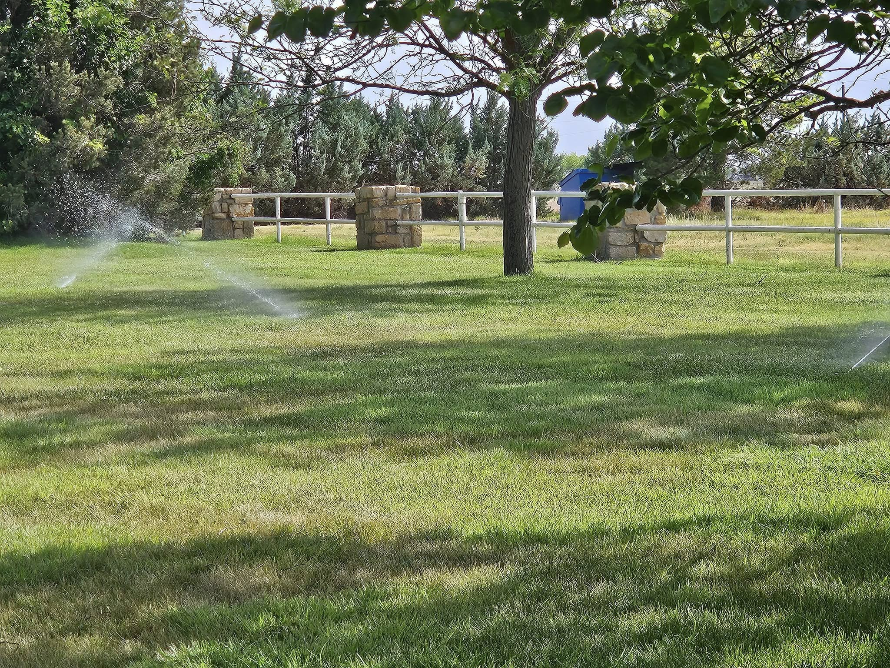

Sprinkler repair
Troubleshooting leaks, broken heads, poor coverage, pressure problems, and older systems that need practical fixes.

No-Quit Services Canyon, TX Call 806-646-0574Sprinkler systems, irrigation repair, and landscape work
No-Quit Services handles practical yard problems: sprinkler repairs, new irrigation installs, rebuilds, bed work, sod and landscape projects around Canyon and the Amarillo area.

What they handle
No-Quit is built for the jobs homeowners actually need solved: broken sprinkler zones, rough irrigation coverage, worn lawn areas, landscape refreshes, and system rebuilds that need someone who understands the full yard, not just one part of it.
Services
Troubleshooting leaks, broken heads, poor coverage, pressure problems, and older systems that need practical fixes.
New systems, rebuilds, and coverage improvements for lawns, beds, and residential yards around Canyon.
Bed cleanups, sod, yard refreshes, soil work, and the on-site details that make the finished space feel handled.
Call with the issue. They come to find the cause, explain the fix, and leave the yard working better than they found it.
Real project photos
Finished front-yard stone work, sprinkler coverage, trenching, side-yard repair, and backyard irrigation testing from No-Quit project photos.





Why call
No-Quit Services presents itself as a practical landscape and sprinkler crew with decades in the trade. The public page points to Canyon, TX, a direct mobile number, email, and license line for Jim Malone.

Need a sprinkler system fixed?
Location
No-Quit Services is listed at 307 Country Club Dr, Canyon, TX 79015. Call first for current availability and project scheduling.
307 Country Club Dr
Canyon, TX 79015
+1 806-646-0574
cduke6424@gmail.com
Jim Malone LI #27032
Open directions